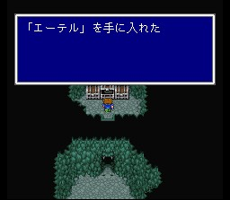
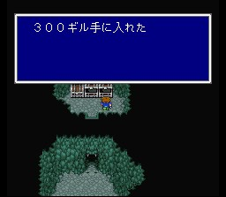
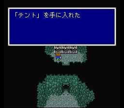
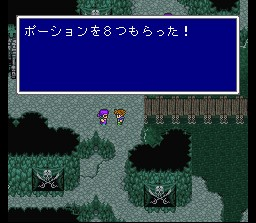

해적의 아지트
처음 왔다면, 보코가 동굴 안으로 들어간 흔적을 발견합니다. 바람의 신전에서 직업들을 얻었을 경우 아까 그냥 한방에 죽였던 스틸배트에게 청마법 흡혈을 배울 수 있습니다.
아지트에 도착하면 보코가 치료를 받고 있으니 보코의 일은 의자에게 부탁합니다.
해적의 보물창고에서 아이템을 꺼내 가집시다. 밖에서 열면 됩니다.

한 해적에게 말을 걸면 긴 여행길에 오르는 파리스를 챙겨줍니다.

이제 정말 당분간은 아지트에 돌아올 일이 없을 겁니다.